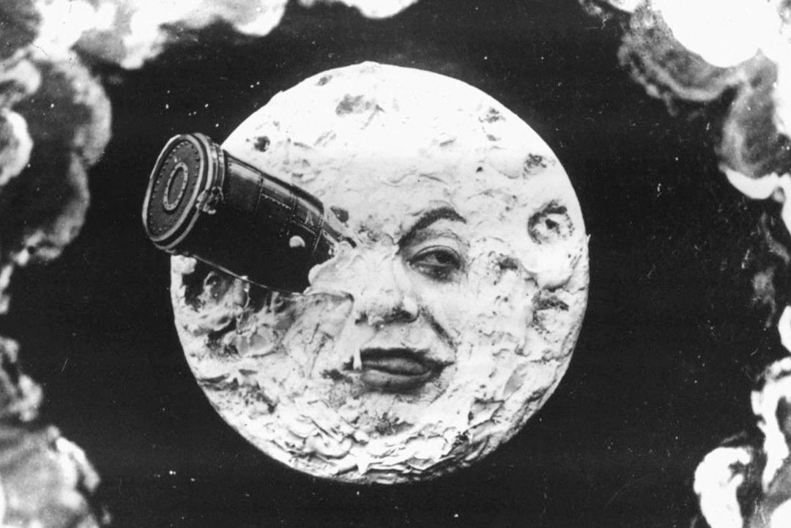
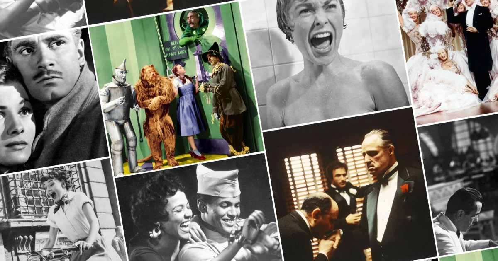

El cine comenzó a tomar forma a finales del siglo XIX con la invención de dispositivos como el Kinetoscope de Thomas Edison y el Cinematographe de los hermanos Lumière. En 1895, los Lumière realizaron la primera proyección pública de cortometrajes en París, lo que marcó el nacimiento del cine como medio de entretenimiento masivo. Durante esta época, las películas eran cortas y mudas, con una duración que raramente superaba un minuto, y el uso de la narración visual y la música en vivo se volvió común en las proyecciones.


La llegada del cine sonoro en 1927 con la película "El cantante de jazz" transformó la industria cinematográfica, permitiendo que los diálogos y la música se integraran en las películas. Este avance impulsó la popularidad del cine en todo el mundo y llevó al surgimiento de Hollywood como el centro de producción cinematográfica. Durante las décadas de 1930 y 1940, el cine estadounidense se consolidó con la creación de los grandes estudios y la producción de clásicos como "Lo que el viento se llevó" y "Casablanca", que establecieron géneros y fórmulas narrativas que perduran hasta hoy.
Desde la década de 1960, el cine ha experimentado una diversificación significativa en estilos, géneros y enfoques narrativos, con el surgimiento de movimientos como la Nueva Ola Francesa y el Nuevo Hollywood, que rompieron con las convenciones tradicionales. La llegada de la tecnología digital en la década de 1990 y la proliferación de plataformas de streaming han cambiado la forma en que se produce y consume cine. Hoy en día, el cine sigue evolucionando, con una mezcla de producciones de grandes estudios y cine independiente, reflejando una diversidad cultural y narrativa que resuena a nivel global.
